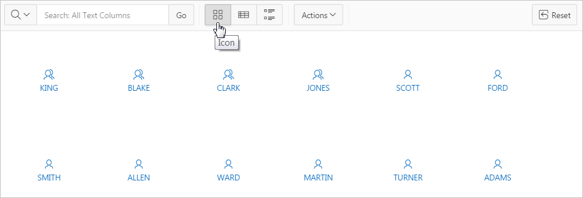
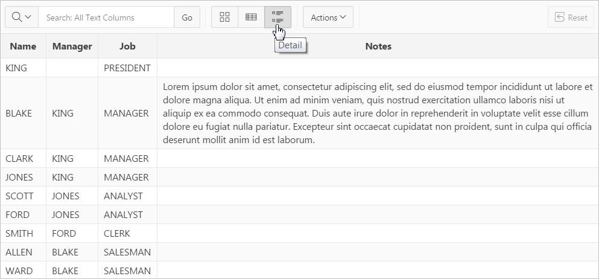

10.6.4 Managing Interactive Grid Attributes
Edit interactive grid attributes to control how an interactive grid works.
- Editing Interactive Grid Attributes
- Making an Existing Interactive Grid Editable
- Controlling Interactive Grid Pagination
- Customizing the Interactive Grid Toolbar
- Enabling Users to Save Interactive Grid Public Reports
- Enabling Flashback and Charts
- Configuring Interactive Grid Download Formats
- Enabling Icon View in an Interactive Grid
- Enabling Detail View in an Interactive Grid
See Also:
Parent topic: Managing Interactive Grids
10.6.4.1 Editing Interactive Grid Attributes
To edit interactive grid Attributes:
See Also:
Parent topic: Managing Interactive Grid Attributes
10.6.4.2 Making an Existing Interactive Grid Editable
End users can alter the report layout using Column menus and sort options, rearrange columns by dragging and dropping, and change how data displays using options on the Actions menu. However, developers determine whether the underlying data is read-only or editable by users. When an interactive grid is editable, end users can edit the underlying data, add rows, delete rows, and refresh rows. By default, editable interactive grids include a Save button on the toolbar.
To make an interactive grid editable:
See Also:
"Editing Pages in Page Designer"Parent topic: Managing Interactive Grid Attributes
10.6.4.3 Controlling Interactive Grid Pagination
Pagination provides the end user with information about the number of rows displayed and the current position within the result set.
To change interactive grid pagination:
Tip:
To see interactive grid pagination examples, install the sample application, Sample Interactive Grids,. See "安装生产力和示例应用."
Parent topic: Managing Interactive Grid Attributes
10.6.4.4 Customizing the Interactive Grid Toolbar
All interactive grids include a toolbar at the top of the page. Developers can customize what controls display on the toolbar or remove it.
Note:
Some of the options described in this procedure only apply to editable interactive grid. See "Making an Existing Interactive Grid Editable".
To customize the interactive grid toolbar:
Tip:
To view an example of adding a toolbar button, install the sample application, Sample Interactive Grids, and go to Reporting, Add Toolbar Button. See "安装生产力和示例应用."
Parent topic: Managing Interactive Grid Attributes
10.6.4.5 Enabling Users to Save Interactive Grid Public Reports
Users can save an interactive grid as a Public report if the report developer enables that capability. Public reports display in a select list of available reports on the toolbar and are available to all users. However, only the user who creates a Public report can save, rename, or delete it. You ca further restrict who can save Public repots by selecting an authorization scheme.
Tip:
The Save Public Report attribute is only available to authenticated users and can be further restricted by the defined Authorization scheme. See "Enabling Flashback and Charts."
To enable end users to save Public reports:
Parent topic: Managing Interactive Grid Attributes
10.6.4.6 Enabling Flashback and Charts
To enable Flashback and Define Chart View:
Parent topic: Managing Interactive Grid Attributes
10.6.4.7 Configuring Interactive Grid Download Formats
To configure interactive grid download formats:
Parent topic: Managing Interactive Grid Attributes
10.6.4.8 Enabling Icon View in an Interactive Grid
Interactive grids support different views of data. By default, interactive grids display data in a Grid view. Developers can optionally display data as icons. Enabling Icon view adds an Icon button to the select view button group.
- About Icon View in an Interactive Grid
- Adding Icon View to an Interactive Grid
- Adding a Custom Icon View Link to an Interactive Grid
Parent topic: Managing Interactive Grid Attributes
10.6.4.8.1 About Icon View in an Interactive Grid
Interactive grids support different views of data. Users can switch between these views by clicking the buttons in the select view button group. The following illustration shows an interactive grid with Icon view enabled and the Icon button selected. To enable Icon view, you must identify the columns used to identify the icon, the label, and the target (that is, the link).
Description of the illustration ig_icon_view.png
Viewing a Working Example of Icon View
To see a working example of this Icon view, install the sample application, Sample Interactive Grids and review Reporting, Icon and Detail Views .
See Also:
Parent topic: Enabling Icon View in an Interactive Grid
10.6.4.8.2 Adding Icon View to an Interactive Grid
An important requirement of icon view is that each item in the view must have the same width and height and the item content must not overflow. The width and height are set with CSS rules on elements with a class of a-IconList-item.
To add an Icon view to an interactive grid:
Parent topic: Enabling Icon View in an Interactive Grid
10.6.4.8.3 Adding a Custom Icon View Link to an Interactive Grid
A custom Icon View link provides greater flexibility in defining the content of the Icon View, including the ability to utilize more than one column.
To add custom Icon View link to an interactive grid:
Parent topic: Enabling Icon View in an Interactive Grid
10.6.4.9 Enabling Detail View in an Interactive Grid
Interactive grids support different views of data. By default, interactive grids display data in a Grid view. Developers can optionally display data as in a Detail view. Enabling Detail view adds an Detail button to the select view button group.
Parent topic: Managing Interactive Grid Attributes
10.6.4.9.1 About Detail View in an Interactive Grid
Interactive grids support different views of data. Users can switch between these views by clicking the buttons in the select view button group. The following illustration shows an interactive grid with Detail view enabled and the Detail button selected. Detail view displays column values using developer defined HTML markup as shown in the following illustration.
Description of the illustration ig_detail_view.png
Tip:
To see a working example of Icon view, install the sample application, Sample Interactive Grids and review Reporting, Icon and Detail Views. See"安装生产力和示例应用"
Parent topic: Enabling Detail View in an Interactive Grid
10.6.4.9.2 Adding a Detail View to an Interactive Grid
To add a Detail view to an interactive grid:
Parent topic: Enabling Detail View in an Interactive Grid